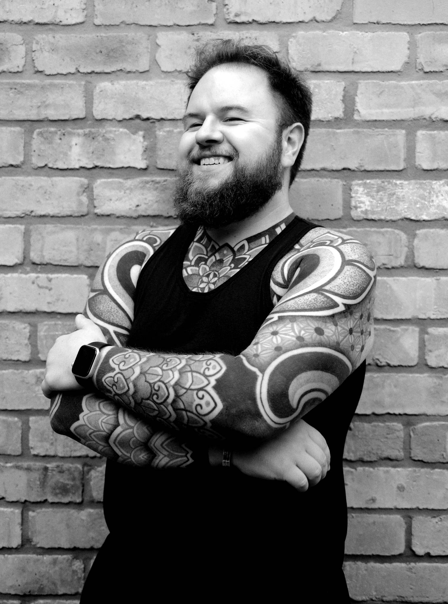
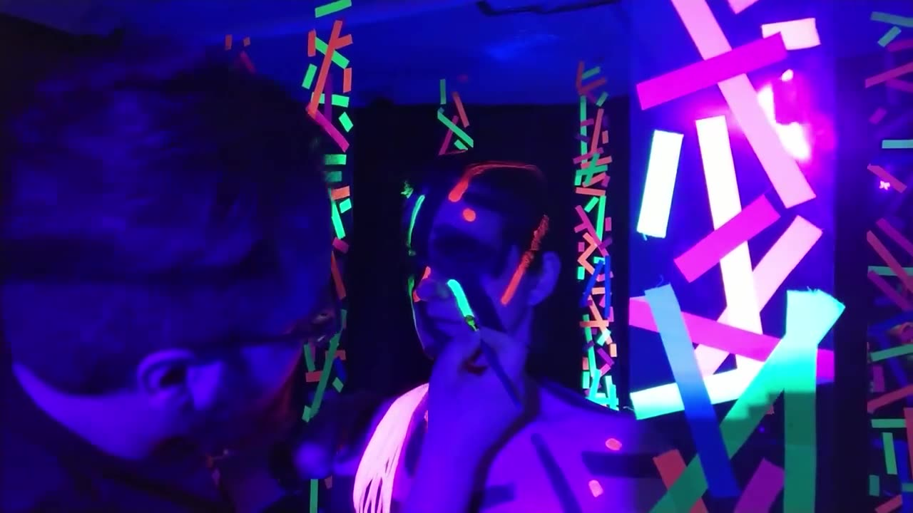

Concept
We talk through your idea, references and goals.

Director & CGI Artist · Birmingham, UK
I'm Rok Pat, a director and CGI artist working with musicians, dancers and brands around the world. I take a project from the first idea to the final frame: concept, storyboard, set and 3D build, animation, edit and delivery.
My background is in arts and architecture, which is why I think about space, light and composition before anything else.
Every project is a conversation, so you're involved at the stages that matter.
We talk through your idea, references and goals.
Every video, CGI or filmed, starts with a storyboard: a clear plan you can react to before anything is built.
Sets and environments are built, in 3D or in real life, and filmed work is shot.
Animation, VFX, camera and lighting turn the plan into finished scenes.
The final edit, in the formats you need.

Most of my projects run remotely. We agree the plan and review stages together at the start, I share work through a private review link, and you give feedback along the way. For filmed work, I'm happy to travel.